Fundamentals of Internet
Fundamentals of Internet
Internet दुनिया का सबसे बड़ा interconnected network है, जिसमें लाखों-करोड़ों computers, servers, mobile devices और networking devices आपस में connected रहते हैं। Internet की help से users information search कर सकते हैं, e-mail भेज सकते हैं, online classes attend कर सकते हैं, video conferencing कर सकते हैं, online payment कर सकते हैं और cloud services का use कर सकते हैं।
Internet का main purpose information sharing और communication को fast, easy और global बनाना है। यह TCP/IP protocol पर काम करता है, जो data को छोटे-छोटे packets में divide करके source से destination तक भेजता है।
Concept of Computer Network
Computer Network दो या दो से अधिक computers/devices का ऐसा group होता है जो communication medium के द्वारा connected होते हैं, ताकि वे data, files, hardware resources और services share कर सकें। Network wired भी हो सकता है जैसे Ethernet cable, और wireless भी हो सकता है जैसे Wi-Fi या Bluetooth।
Network का use offices, schools, banks, hospitals, cyber cafes और homes में होता है। Network की help से printer sharing, file sharing, internet sharing, database access और centralized management possible होता है।
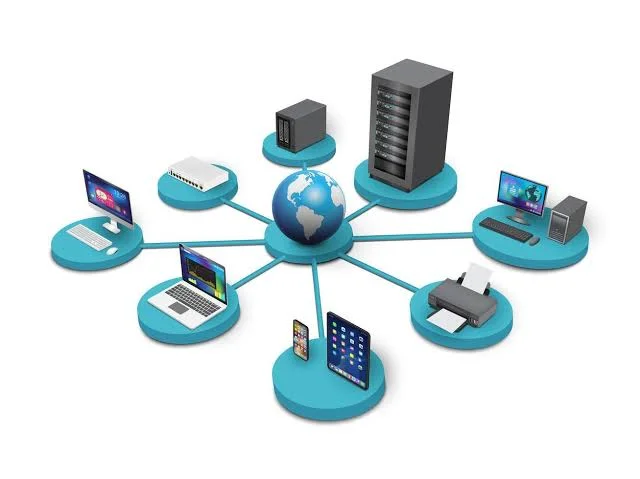
Client Server Model
Client Server Model एक network architecture है, जिसमें Client और Server के बीच communication के माध्यम से data तथा services का आदान-प्रदान होता है। इस मॉडल में Client किसी resource या service की request भेजता है, जबकि Server उस request को process करके आवश्यक response वापस भेजता है।
Client
Client वह computer, device या application होता है, जो Server से किसी
service, resource या data की request करता है और Server से प्राप्त response का उपयोग करता है।
Server
Server एक शक्तिशाली computer या software होता है, जो Client द्वारा भेजी गई
request को process करता है और आवश्यक data, resources या services को response के रूप में वापस भेजता
है।
Working Example
जब user browser में www.example.com open करता है, तो browser client की तरह web server को
request भेजता है। Server requested webpage send करता है और browser उसे user को display करता है।
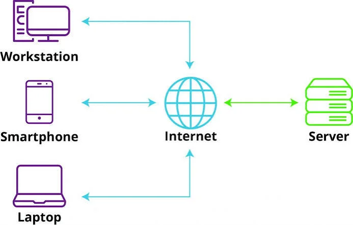
Advantages
- Centralized Management:
इस मॉडल में सभी data और services एक central server पर store होती हैं। इससे data management, updates और backup करना आसान हो जाता है। - Better Security:
Server पर authentication और access control लागू किए जा सकते हैं, जिससे केवल अधिकृत (authorized) users ही data और resources का उपयोग कर सकते हैं। इससे network security बेहतर होती है। - Supports Multiple Clients:
एक Server एक ही समय में कई clients की requests को process कर सकता है। इसलिए अनेक users एक साथ एक ही service का उपयोग कर सकते हैं। - Easy Data Sharing:
सभी clients को data एक ही central server से प्राप्त होता है, जिससे सभी users को समान (consistent) और updated information मिलती है। - Easy Maintenance:
इस मॉडल में यदि किसी software या service में बदलाव करना हो, तो केवल Server पर update करना पड़ता है। सभी clients को अलग-अलग update करने की आवश्यकता नहीं होती, जिससे maintenance आसान और समय की बचत होती है।
Disadvantages
- Server Failure:
यदि Server खराब हो जाए या बंद हो जाए, तो सभी clients उसकी services और resources का उपयोग नहीं कर पाएँगे। इससे पूरा network प्रभावित हो सकता है। - High cost:
एक शक्तिशाली Server, network devices तथा maintenance की आवश्यकता होने के कारण इस मॉडल की installation और maintenance cost अधिक होती है। - Network Dependency:
यह मॉडल पूरी तरह network connection पर निर्भर करता है। यदि network या Internet connection में समस्या आ जाए, तो clients Server की services और data तक पहुँच नहीं सकते। - Server Overload:
जब बहुत अधिक clients एक साथ requests भेजते हैं, तो Server पर अधिक load पड़ता है। इससे performance धीमी हो सकती है।
Peer to Peer Model
Peer to Peer Model एक network architecture है, जिसमें नेटवर्क का प्रत्येक node (computer) एक साथ Client और Server दोनों की भूमिका निभाता है। इस मॉडल में किसी central server की आवश्यकता नहीं होती। सभी computers आपस में सीधे (directly) data, files, resources तथा services को साझा (share) कर सकते हैं।
P2P Model में प्रत्येक node के अधिकार और कार्य समान होते हैं। कोई भी computer दूसरे computer से data प्राप्त भी कर सकता है और उसे data उपलब्ध भी करा सकता है। इस कारण network load सभी nodes में समान रूप से विभाजित हो जाता है और प्रत्येक computer स्वतंत्र रूप से कार्य करता है।

Advantages
- Low Cost:
इस मॉडल में किसी dedicated server की आवश्यकता नहीं होती, इसलिए installation और maintenance cost कम होती है। - Easy Setup:
P2P Network को install और configure करना बहुत आसान होता है। छोटे network को बिना किसी जटिल प्रक्रिया के बनाया जा सकता है। - Resource Sharing:
सभी computers आपस में सीधे files, folders, printers तथा अन्य resources को share कर सकते हैं। इसके लिए central server की आवश्यकता नहीं होती। - No Single Point of Failure:
यदि कोई एक computer (node) बंद हो जाए, तो बाकी computers सामान्य रूप से कार्य करते रहते हैं। इससे पूरा network बंद नहीं होता। - Equal Role for Every Node:
इस मॉडल में प्रत्येक node एक साथ Client और Server दोनों की भूमिका निभाता है। इसलिए सभी computers समान अधिकारों के साथ data और resources का आदान-प्रदान कर सकते हैं.
Disadvantages
- Less Security: इस मॉडल में कोई central server नहीं होता, इसलिए data security और access control कमज़ोर होते हैं। अनधिकृत (unauthorized) users के लिए data तक पहुँचने का खतरा अधिक रहता है।
- Difficult Backup: सभी computers अपना-अपना data अलग-अलग store करते हैं, इसलिए data management और backup करना कठिन हो जाता है।
- Not Suitable for Large Network: यह मॉडल छोटे network के लिए उपयुक्त होता है। Users की संख्या बढ़ने पर network performance प्रभावित हो सकती है।
- Performance Issue: यदि किसी computer (node) को बंद कर दिया जाए या उसमें समस्या आ जाए, तो उस computer पर उपलब्ध files और resources अन्य users के लिए उपलब्ध नहीं रहेंगे। इससे resource sharing प्रभावित हो सकती है।
Networking Devices
Networking Devices वे hardware devices होते हैं जिनकी help से computers और networks connect, communicate और data transfer करते हैं। ये devices network traffic को control करते हैं और data को सही destination तक पहुंचाने में help करते हैं।
Hub
Hub एक networking device है, जिसका उपयोग एक network में कई computers और
devices को आपस में जोड़ने के लिए किया जाता है। जब किसी एक device से data प्राप्त होता है, तो Hub उस
data को बिना किसी जाँच (filtering) के नेटवर्क से जुड़े सभी devices को भेज देता है। इसलिए Hub को
broadcast device भी कहा जाता है।

Switch
Switch एक networking device है, जिसका उपयोग एक network में कई computers और
devices को आपस में जोड़ने के लिए किया जाता है। Switch प्राप्त data को MAC Address की सहायता से
पहचानता है और उसे केवल उसी destination device तक भेजता है, जिसके लिए वह data भेजा गया होता है। इससे
network traffic कम होता है और data transmission तेज़ तथा अधिक सुरक्षित होता है।
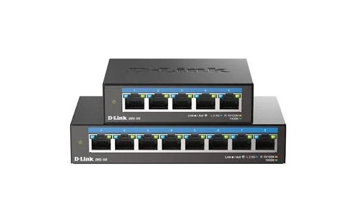
Router
Router एक networking device है, जिसका उपयोग दो या दो से अधिक networks को
आपस में जोड़ने तथा उनके बीच data packets को सही destination तक पहुँचाने के लिए किया जाता है। Router
IP Address की सहायता से data के लिए सबसे उपयुक्त (best path) मार्ग का चयन करता है और उसे सही network
तक भेजता है। इसी कारण Router को path selecting device भी कहा जाता है।
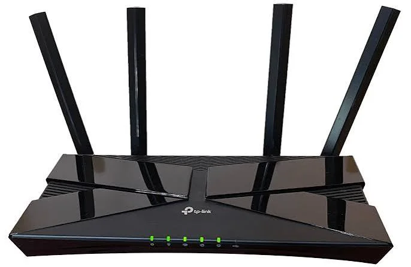
Bridge
Bridge एक networking device है, जिसका उपयोग दो समान प्रकार के Local Area
Networks (LANs) या network segments को आपस में जोड़ने के लिए किया जाता है। यह MAC Address के आधार पर
data को filter करता है और केवल आवश्यक data को ही दूसरे network segment तक भेजता है। इससे network
traffic कम होता है और network performance बेहतर होती है।
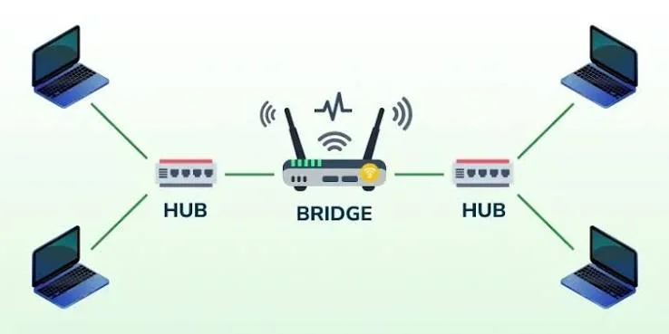
Gateway
Gateway एक networking device है, जिसका उपयोग दो अलग-अलग networks या
विभिन्न network protocols वाले networks को आपस में जोड़ने के लिए किया जाता है। यह data को एक network
से दूसरे network में भेजने से पहले आवश्यकतानुसार protocol conversion करता है। इसलिए Gateway को
Protocol Converter भी कहा जाता है।

Firewall
Firewall एक network security system है, जिसका उपयोग Computer या network
को unauthorized access, hackers, viruses, malware तथा अन्य cyber attacks से सुरक्षित रखने के लिए
किया जाता है। यह आने वाले (incoming) और जाने वाले (outgoing) network traffic की निगरानी (monitoring)
करता है तथा पहले से निर्धारित security rules के आधार पर data packets को allow या block करता है।
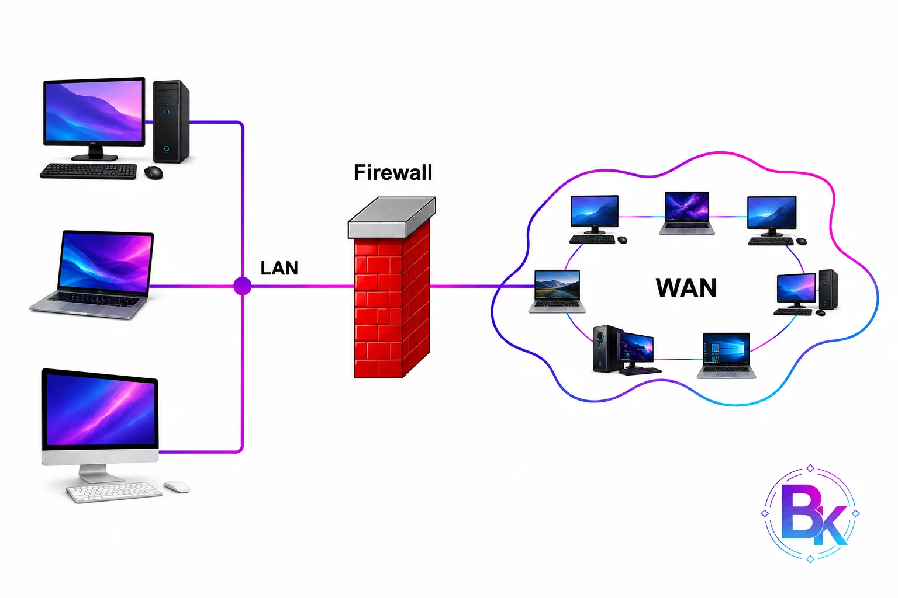
LAN, MAN and WAN
LAN(Local Area Network)
एक network है, जो सीमित क्षेत्र जैसे room, office,
school, college या building के अंदर कई computers और devices को आपस में जोड़ता है, ताकि वे data और
resources को साझा (share) कर सकें।

MAN(Metropolitan Area Network)
एक ऐसा computer network है, जो किसी city या बड़े
metropolitan area में स्थित कई LANs (Local Area Networks) को आपस में जोड़ता है। इसका क्षेत्रफल LAN
से बड़ा और WAN से छोटा होता है। MAN का उपयोग किसी शहर के विभिन्न offices, colleges, universities,
government departments तथा business organizations को जोड़ने के लिए किया जाता है।
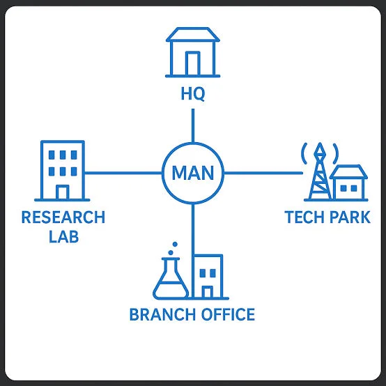
WAN(Wide Area Network)
एक ऐसा computer network है, जो बहुत बड़े geographical area
जैसे country, continent या पूरी world में स्थित कई LANs और MANs को आपस में जोड़ता है। WAN का उपयोग
लंबी दूरी तक data communication तथा resource sharing के लिए किया जाता है। इसमें leased lines, fiber
optic cables, satellites तथा Internet जैसी communication technologies का उपयोग किया जाता है।
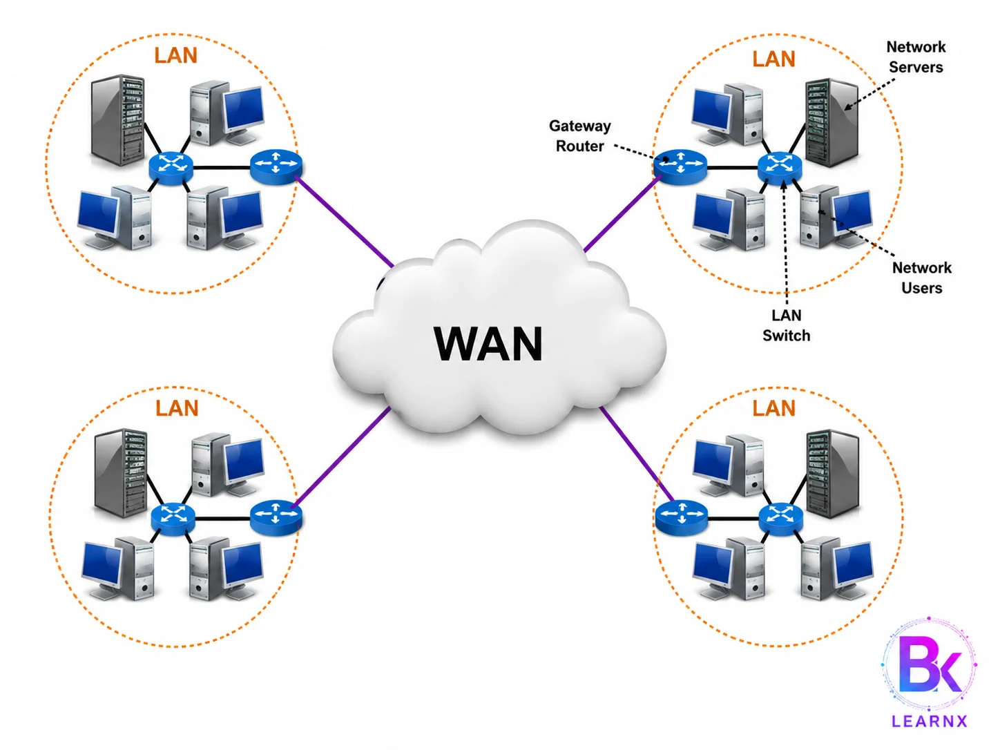
Network Topology
Topology का अर्थ किसी network में devices और communication links की व्यवस्था (arrangement) या संरचना (structure) से है। यह बताती है कि computers और अन्य network devices आपस में किस प्रकार जुड़े हुए हैं तथा उनके बीच data का आदान-प्रदान कैसे होता है।
1. Bus Topology
Bus Topology एक ऐसी Network Topology है जिसमें सभी Computers, Servers और Networking Devices एक ही मुख्य Cable (Backbone Cable) से जुड़े होते हैं। इस मुख्य Cable के माध्यम से सभी Devices Data का आदान-प्रदान करते हैं। जब कोई Computer Data भेजता है, तो वह Data पूरी Backbone Cable में Travel करता है और केवल वही Device उसे Accept करती है जिसका Address उस Data से Match करता है। Bus Topology छोटे Networks के लिए उपयुक्त मानी जाती है क्योंकि इसमें Cable कम लगती है, Installation आसान होता है तथा Cost भी कम आती है।

Advantages of Bus Topology
-
Low Installation Cost:
Bus Topology में केवल एक मुख्य Backbone Cable का उपयोग किया जाता है, इसलिए अन्य Topologies की तुलना में Cable और Networking Hardware कम लगता है। इसी कारण इसका Installation Cost काफी कम होता है और यह छोटे Offices, Schools तथा Computer Labs के लिए उपयुक्त विकल्प है। -
Easy to Install and Configure:
इस Topology को Install करना तथा Configure करना बहुत आसान होता है। नए Users भी कम समय में इसका Network तैयार कर सकते हैं क्योंकि इसमें Complex Wiring या अतिरिक्त Networking Devices की आवश्यकता नहीं होती। -
Less Cable Requirement:
Bus Topology में सभी Devices एक ही Backbone Cable से जुड़े होते हैं, इसलिए अन्य Topologies की तुलना में Cable बहुत कम उपयोग होती है। इससे Network व्यवस्थित रहता है तथा Maintenance Cost भी कम हो जाती है। -
Suitable for Small Networks:
यह Topology छोटे Offices, Computer Labs, Libraries और Training Centers जैसे स्थानों के लिए बहुत उपयोगी होती है क्योंकि कम Devices होने पर यह अच्छी Performance प्रदान करती है और Network को Manage करना आसान रहता है। -
Easy to Extend:
यदि Network में नया Computer जोड़ना हो तो उसे आसानी से Backbone Cable से Connect किया जा सकता है। इसके लिए पूरे Network को दोबारा Design करने की आवश्यकता नहीं पड़ती, जिससे Expansion आसान हो जाता है।
Disadvantages of Bus Topology
-
Backbone Cable Failure:
यदि मुख्य Backbone Cable किसी कारण से खराब हो जाती है या टूट जाती है, तो पूरा Network काम करना बंद कर देता है। इस स्थिति में सभी Connected Computers एक-दूसरे से Communication नहीं कर पाते। -
Difficult Fault Detection:
यदि Network में किसी स्थान पर Fault आ जाए, तो उसे ढूँढना कठिन होता है क्योंकि सभी Devices एक ही Cable से जुड़े होते हैं। Fault खोजने में अधिक समय और मेहनत लग सकती है। -
Performance Decreases with More Devices:
जैसे-जैसे Network में Computers की संख्या बढ़ती जाती है, वैसे-वैसे Data Traffic भी बढ़ जाता है। इस कारण Data Collision होने की संभावना बढ़ती है और पूरे Network की Speed कम हो जाती है। -
Limited Cable Length:
Bus Topology में Backbone Cable की लंबाई सीमित होती है। यदि Cable बहुत लंबी हो जाए, तो Signal Weak होने लगते हैं, जिससे Communication की Quality प्रभावित होती है। -
Low Security:
क्योंकि Data पूरी Backbone Cable में Broadcast होता है, इसलिए अन्य Connected Devices भी उस Data को Receive कर सकते हैं। यदि उचित Security लागू न हो, तो Unauthorized Users Data को Access कर सकते हैं।
2. Star Topology
Star Topology एक ऐसी Network Topology है जिसमें सभी Computers, Servers तथा अन्य Networking Devices एक Central Device जैसे Switch या Hub से अलग-अलग Cable के माध्यम से जुड़े होते हैं। इस Topology में किसी भी दो Computers के बीच Data का आदान-प्रदान सीधे नहीं होता, बल्कि पहले Central Device तक पहुँचता है, फिर वहाँ से Destination Device तक भेजा जाता है। वर्तमान समय में Offices, Schools, Banks तथा Companies में सबसे अधिक इसी Topology का उपयोग किया जाता है क्योंकि इसे Manage करना आसान होता है और इसकी Performance भी अच्छी होती है।
Advantages of Star Topology
-
Easy Installation and Management:
Star Topology को Install करना, Configure करना तथा Manage करना बहुत आसान होता है। प्रत्येक Computer अलग Cable द्वारा Central Device से जुड़ा होता है, इसलिए Network में किसी भी प्रकार का बदलाव या Maintenance आसानी से किया जा सकता है। -
Easy Fault Detection:
यदि किसी एक Computer या उसकी Cable में कोई Fault आ जाता है, तो उसे आसानी से पहचानकर ठीक किया जा सकता है। इससे पूरे Network को Check करने की आवश्यकता नहीं पड़ती और Troubleshooting तेज़ी से हो जाती है। -
Failure of One Device Does Not Affect Others:
यदि किसी एक Computer या उसकी Connecting Cable में समस्या आ जाए, तो केवल वही Device प्रभावित होती है। बाकी सभी Computers सामान्य रूप से कार्य करते रहते हैं, जिससे Network की Reliability बढ़ जाती है। -
Better Performance:
Star Topology में प्रत्येक Computer का अपना Dedicated Connection होता है, जिससे Data Collision की संभावना बहुत कम हो जाती है। इस कारण Network की Speed और Performance अन्य कई Topologies की तुलना में अधिक अच्छी रहती है। -
Easy Network Expansion:
यदि भविष्य में नए Computers या अन्य Devices जोड़ने की आवश्यकता हो, तो उन्हें आसानी से Central Switch या Hub से Connect किया जा सकता है। इससे पूरे Network की Structure को बदलने की आवश्यकता नहीं पड़ती।
Disadvantages of Star Topology
-
Central Device Failure:
यदि Central Hub या Switch किसी कारण से खराब हो जाए, तो पूरा Network कार्य करना बंद कर देता है। क्योंकि सभी Devices उसी Central Device पर निर्भर होती हैं। -
Higher Installation Cost:
इस Topology में प्रत्येक Computer को अलग-अलग Cable द्वारा Central Device से जोड़ना पड़ता है। अधिक Cable और Central Switch की आवश्यकता होने के कारण इसकी Installation Cost अधिक होती है। -
More Cable Requirement:
Star Topology में प्रत्येक Device के लिए अलग Cable का उपयोग किया जाता है। इसी कारण Cable की मात्रा अधिक लगती है और Wiring भी अन्य Topologies की तुलना में अधिक होती है। -
Dependency on Central Device:
पूरे Network की कार्यक्षमता Central Hub या Switch पर निर्भर करती है। यदि Central Device में Performance की समस्या आती है, तो पूरे Network की Speed और Communication प्रभावित हो सकते हैं। -
Expensive for Large Networks:
बहुत बड़े Networks में अधिक Ports वाले Switches, अतिरिक्त Cabling तथा Network Devices की आवश्यकता होती है, जिससे Setup और Maintenance की कुल लागत काफी बढ़ जाती है।
3. Ring Topology
Ring Topology एक ऐसी Network Topology है जिसमें सभी Computers और Networking Devices एक गोलाकार (Circular) रूप में जुड़े होते हैं। प्रत्येक Device अपने दोनों पड़ोसी Devices से Connected रहती है, जिससे एक Closed Ring बन जाती है। इस Topology में Data एक निश्चित दिशा (Clockwise या Anti-clockwise) में Travel करता है। प्रत्येक Device Data को Receive करके अगले Device तक Forward करती है, जब तक कि Data अपने Destination तक न पहुँच जाए। Ring Topology का उपयोग उन Networks में किया जाता है जहाँ Data Flow को नियंत्रित रखना आवश्यक होता है तथा Data Collision की संभावना कम करनी होती है।

Advantages of Ring Topology
-
No Data Collision:
Ring Topology में Data एक निश्चित दिशा में Travel करता है और सामान्यतः Token Passing तकनीक का उपयोग किया जाता है। इस कारण दो Devices एक साथ Data नहीं भेजतीं, जिससे Data Collision की संभावना बहुत कम हो जाती है। -
Equal Network Access:
इस Topology में प्रत्येक Computer को समान अवसर मिलता है क्योंकि सभी Devices एक ही नियम के अनुसार Data भेजती और प्राप्त करती हैं। इससे किसी एक Device को अतिरिक्त Priority नहीं मिलती। -
Better Performance Under Heavy Load:
यदि Network में Data Traffic अधिक हो, तब भी Ring Topology अच्छी Performance प्रदान कर सकती है क्योंकि Data का Flow नियंत्रित रहता है और अनावश्यक Broadcast नहीं होता। -
Easy Data Transmission:
Data एक निर्धारित Path से गुजरता है, जिससे प्रत्येक Device को पता रहता है कि Data किस दिशा में भेजना है। इससे Communication व्यवस्थित और Reliable बनी रहती है। -
Predictable Network Performance:
Ring Topology में Data का Flow पहले से निर्धारित होता है, इसलिए Network की Performance आसानी से अनुमानित की जा सकती है। यह Feature Industrial Networks और Specialized Systems में उपयोगी होता है।
Disadvantages of Ring Topology
-
Failure of One Node Affects Entire Network:
यदि किसी एक Computer या Connecting Cable में Fault आ जाए, तो पूरी Ring टूट सकती है और पूरा Network प्रभावित हो सकता है। -
Difficult Troubleshooting:
Network में Fault आने पर यह पता लगाना कठिन हो सकता है कि समस्या किस Device या Cable में है। इससे Maintenance में अधिक समय लग सकता है। -
Difficult Network Expansion:
यदि नया Computer जोड़ना या किसी Computer को हटाना हो, तो पूरी Ring को अस्थायी रूप से बंद करना पड़ सकता है। इससे Network का कार्य प्रभावित होता है। -
Slower Data Transfer in Large Networks:
जैसे-जैसे Network में Devices की संख्या बढ़ती है, Data को अधिक Nodes से होकर गुजरना पड़ता है, जिससे Communication में Delay हो सकता है। -
Higher Maintenance Cost:
Ring Topology की Maintenance अन्य सरल Topologies की तुलना में अधिक कठिन होती है क्योंकि पूरे Ring Structure को सही स्थिति में बनाए रखना आवश्यक होता है।
Token Ring Network इसका एक प्रसिद्ध उदाहरण है, जिसमें Token Passing तकनीक का उपयोग करके Data को सुरक्षित और व्यवस्थित तरीके से भेजा जाता था।
4. Mesh Topology
Mesh Topology एक ऐसी Network Topology है जिसमें प्रत्येक Computer या Networking Device एक या एक से अधिक अन्य Devices से सीधे Connected होती है। Full Mesh Network में प्रत्येक Device सभी अन्य Devices से Direct Connection रखती है, जबकि Partial Mesh में केवल आवश्यक Devices Directly Connected होती हैं। Mesh Topology सबसे अधिक Reliable मानी जाती है क्योंकि यदि किसी एक Connection में Fault आ जाए, तब भी Data दूसरे उपलब्ध Path से अपने Destination तक पहुँच सकता है। यही कारण है कि इसका उपयोग Military Networks, Banking Systems, Data Centers और Critical Communication Networks में किया जाता है।
Advantages of Mesh Topology
-
High Reliability:
यदि किसी एक Cable या Connection में समस्या आ जाए, तो Data दूसरे उपलब्ध Path से भेजा जा सकता है। इस कारण Network लगातार कार्य करता रहता है और Communication बंद नहीं होता। -
Excellent Fault Tolerance:
Mesh Topology में Multiple Paths उपलब्ध होने के कारण किसी एक Link के Failure से पूरा Network प्रभावित नहीं होता। यह विशेषता इसे Mission Critical Systems के लिए उपयुक्त बनाती है। -
Better Security:
Direct Point-to-Point Connections होने के कारण Data केवल संबंधित Devices के बीच Travel करता है। इससे Unauthorized Access और Data Interception की संभावना कम हो जाती है। -
High Network Performance:
Dedicated Connections होने के कारण Data Traffic आसानी से Manage होता है तथा Congestion कम होता है। इससे Data Transfer Speed और Overall Performance बेहतर रहती है। -
Easy Fault Isolation:
यदि किसी Connection में Fault आता है, तो उसे आसानी से पहचानकर ठीक किया जा सकता है क्योंकि प्रत्येक Connection अलग-अलग उपलब्ध होता है।
Disadvantages of Mesh Topology
-
Very High Installation Cost:
प्रत्येक Device को कई अन्य Devices से Connect करना पड़ता है, इसलिए अधिक Cable, Ports तथा Networking Hardware की आवश्यकता होती है, जिससे Cost बहुत बढ़ जाती है। -
Complex Installation:
इतने अधिक Connections होने के कारण Mesh Network को Install करना काफी कठिन होता है। Network Planning और Configuration के लिए Experienced Professionals की आवश्यकता होती है। -
Difficult Maintenance:
Large Mesh Network में अनेक Cables और Connections होने के कारण Maintenance और Troubleshooting में अधिक समय तथा मेहनत लगती है। -
More Space Requirement:
अधिक संख्या में Cables और Networking Devices होने के कारण Physical Space की आवश्यकता भी अधिक होती है, जिससे Cable Management कठिन हो सकता है। -
Not Suitable for Small Networks:
छोटे Offices, Homes या Computer Labs में Mesh Topology का उपयोग करना आर्थिक रूप से उचित नहीं होता, क्योंकि इसकी लागत आवश्यकता से अधिक होती है।
Internet Backbone, Military Communication Networks तथा बड़े Data Centers में Mesh Topology का उपयोग किया जाता है क्योंकि यहाँ Reliability और Continuous Connectivity सबसे अधिक महत्वपूर्ण होती है।
5. Tree Topology
Tree Topology एक ऐसी Network Topology है जो Star Topology और Bus Topology का Combination होती है। इसमें एक मुख्य Backbone Cable होती है, जिससे कई Switches या Hubs जुड़े रहते हैं और प्रत्येक Switch से कई Computers Connected होते हैं। इसका Structure बिल्कुल एक पेड़ (Tree) की तरह दिखाई देता है, जिसमें Root, Branches और Leaf Nodes होती हैं। Tree Topology का उपयोग बड़े Organizations, Schools, Universities, Banks तथा Corporate Offices में किया जाता है, जहाँ Network को कई Departments या Sections में Divide करना आवश्यक होता है।

Advantages of Tree Topology
-
Easy Network Expansion:
Tree Topology में नए Computers, Departments या Network Segments को आसानी से जोड़ा जा सकता है। पूरे Network को दोबारा Design करने की आवश्यकता नहीं पड़ती, जिससे Expansion सरल और व्यवस्थित रहता है। -
Easy Network Management:
Network अलग-अलग Branches में Divide होने के कारण प्रत्येक Department को अलग से Manage किया जा सकता है। इससे Administration आसान हो जाती है और Network को Control करना सरल रहता है। -
Suitable for Large Organizations:
Tree Topology बड़े Networks के लिए सबसे उपयुक्त मानी जाती है क्योंकि इसमें हजारों Devices को Systematic तरीके से Connect किया जा सकता है और Performance भी अच्छी बनी रहती है। -
Easy Fault Isolation:
यदि किसी एक Branch में Fault आता है, तो केवल वही Branch प्रभावित होती है। बाकी पूरा Network सामान्य रूप से कार्य करता रहता है, जिससे Maintenance आसान हो जाती है। -
Better Scalability:
इस Topology में भविष्य में Network को बढ़ाना बहुत आसान होता है। नई Branches और Switches जोड़कर बिना पुराने Network को प्रभावित किए आसानी से विस्तार किया जा सकता है।
Disadvantages of Tree Topology
-
Backbone Cable Failure:
यदि मुख्य Backbone Cable खराब हो जाए, तो उससे Connected कई Branches एक साथ काम करना बंद कर सकती हैं, जिससे पूरे Network का बड़ा भाग प्रभावित हो जाता है। -
High Installation Cost:
इस Topology में Backbone Cable, Multiple Switches तथा अधिक Cabling की आवश्यकता होती है, जिससे Installation Cost अन्य Topologies की तुलना में अधिक होती है। -
Complex Configuration:
Tree Topology को Design और Configure करना आसान नहीं होता। Large Networks में Proper Planning तथा Experienced Network Administrator की आवश्यकता होती है। -
Difficult Maintenance:
Network बड़ा होने पर सभी Branches, Switches और Cables की नियमित Maintenance करनी पड़ती है, जिसमें अधिक समय और संसाधनों की आवश्यकता होती है। -
More Cable Requirement:
Star और Bus दोनों Topologies के Combination होने के कारण इसमें काफी अधिक Cable उपयोग होती है, जिससे Wiring तथा Installation दोनों महंगे हो जाते हैं।
University Campus, Large Office Buildings तथा Corporate Companies में Tree Topology का उपयोग किया जाता है, जहाँ प्रत्येक Department का अलग Network होता है लेकिन सभी एक Central Backbone से जुड़े रहते हैं।
6. Hybrid Topology
Hybrid Topology एक ऐसी Network Topology है जिसमें दो या दो से अधिक अलग-अलग Topologies जैसे Star, Bus, Ring और Mesh को मिलाकर एक नया Network तैयार किया जाता है। इसका उद्देश्य विभिन्न Topologies के Advantages प्राप्त करना और उनकी Limitations को कम करना होता है। Hybrid Topology बड़े Organizations, Government Departments, Banks, Data Centers और Multi-National Companies में सबसे अधिक उपयोग की जाती है क्योंकि यह Highly Flexible, Reliable और Scalable होती है।
Advantages of Hybrid Topology
-
High Flexibility:
Hybrid Topology में आवश्यकता के अनुसार विभिन्न Topologies को Combine किया जा सकता है। इससे Organization अपनी जरूरत के अनुसार सबसे उपयुक्त Network Design तैयार कर सकता है। -
Better Scalability:
यदि भविष्य में Network का आकार बढ़ाना हो, तो नई Topology या नया Segment आसानी से जोड़ा जा सकता है। इससे Existing Network को बदलने की आवश्यकता नहीं पड़ती। -
High Reliability:
एक Network Segment में समस्या आने पर पूरा Network बंद नहीं होता। अन्य Segments सामान्य रूप से कार्य करते रहते हैं, जिससे Network की Reliability बढ़ जाती है। -
Better Performance:
Hybrid Topology विभिन्न Topologies की विशेषताओं का लाभ उठाती है। इससे Network Traffic बेहतर तरीके से Manage होता है और Data Transfer की Speed अच्छी बनी रहती है। -
Suitable for Large Networks:
बड़े Organizations, Universities और Data Centers में Hybrid Topology सबसे अधिक उपयोगी होती है, क्योंकि यह Complex Networks को Efficient तरीके से Manage कर सकती है।
Disadvantages of Hybrid Topology
-
Very High Cost:
Hybrid Topology में विभिन्न प्रकार के Networking Devices, Switches, Routers तथा अधिक Cabling की आवश्यकता होती है, जिससे इसकी कुल लागत काफी अधिक हो जाती है। -
Complex Design:
इस Topology को Design करना आसान नहीं होता। Network Planning, Configuration तथा Proper Documentation की आवश्यकता होती है। -
Difficult Maintenance:
कई प्रकार की Topologies होने के कारण Maintenance तथा Troubleshooting अपेक्षाकृत कठिन हो जाती है, विशेषकर बड़े Networks में। -
Skilled Administrator Required:
Hybrid Network को सही तरीके से Install, Configure तथा Maintain करने के लिए Experienced Network Engineers और Skilled Administrators की आवश्यकता होती है। -
More Hardware Requirement:
इस Topology में विभिन्न प्रकार के Switches, Routers, Bridges तथा अन्य Networking Devices का उपयोग होता है, जिससे Hardware Requirement और Overall Complexity दोनों बढ़ जाते हैं।
Google, Microsoft, Amazon, Banks, Airports, Universities तथा बड़े Corporate Offices में Hybrid Topology का उपयोग किया जाता है क्योंकि यहाँ अलग-अलग Departments के लिए अलग-अलग Network Structures की आवश्यकता होती है।
Internet, Intranet and Extranet
Internet
Internet दुनिया का सबसे बड़ा computer network है, जो लाखों computers, servers और अन्य devices को आपस में जोड़ता है। यह TCP/IP protocol की सहायता से data और information का आदान-प्रदान करता है। Internet के माध्यम से web browsing, e-mail, online banking, video conferencing, social media तथा अन्य online services का उपयोग किया जा सकता है।
Intranet
Intranet एक private network है, जिसका उपयोग किसी organization, company, school या office के अंदर information, files और resources को साझा (share) करने के लिए किया जाता है। इस network का उपयोग केवल authorized users ही कर सकते हैं। Intranet अधिक secure होता है और इसका उपयोग internal communication तथा data sharing के लिए किया जाता है।
Extranet
Extranet एक private network है, जो Intranet का विस्तारित (extended) रूप होता है। यह किसी organization के employees के साथ-साथ customers, suppliers, business partners या अन्य authorized external users को भी सीमित (limited) और सुरक्षित (secure) पहुँच प्रदान करता है। Extranet का उपयोग information sharing, business communication तथा online collaboration के लिए किया जाता है।
Internet Service Provider and its Relevance
Internet Service Provider (ISP) वह company या organization होती है जो users को internet connection provide करती है। ISP wired broadband, fiber, mobile data, leased line और wireless internet services provide कर सकता है। ISP user को IP address, bandwidth, DNS service और internet gateway provide करता है।
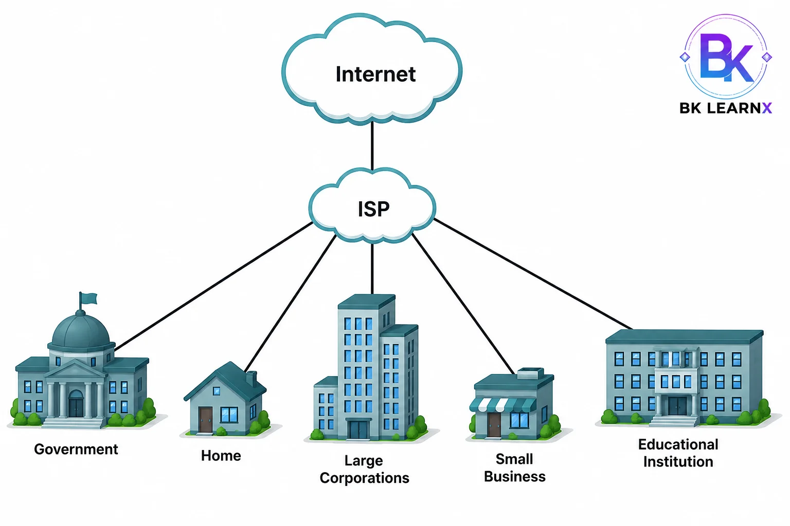
Role of Modem and Installation Procedure
Modem का full form Modulator-Demodulator होता है। यह digital signals को analog signals में और analog signals को digital signals में convert करता है। पुराने telephone line internet में modem बहुत important था। आजकल broadband/fiber connections में modem-router combined device use होता है।
Installation Procedure of Modem using Control Panel
- Modem को computer और telephone/internet line से connect करें।
- Control Panel open करें।
- Network and Internet या Phone and Modem option पर जाएँ।
- अगर modem detect नहीं हुआ है तो Add option select करें।
- Modem driver install करें या Windows को automatically detect करने दें।
- ISP द्वारा दिए गए username, password और access details fill करें।
- Connection create करके test करें।
192.168.1.1।Web Browser
Web Browser application software है जिसका use websites और web pages को access, retrieve और display करने के लिए किया जाता है। Browser URL request को web server तक भेजता है और server से received HTML, CSS, JavaScript और media files को readable webpage में convert करके display करता है।
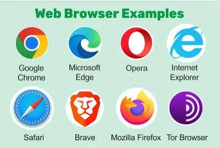
- Web Browser का मुख्य उद्देश्य Internet पर उपलब्ध websites और web pages तक पहुँच प्रदान करना है।
- यह HTML, CSS और JavaScript की सहायता से web pages को सही रूप में display करता है।
- इसकी सहायता से E-mail, online banking, social media, e-commerce, online classes तथा अन्य web applications का उपयोग किया जा सकता है।
- Search Engine की सहायता से information, images, videos तथा अन्य online content खोजने में मदद करता है।
- Web Browser के माध्यम से documents, software, images तथा अन्य files को download और upload किया जा सकता है।
- आधुनिक Web Browsers HTTPS, encryption तथा अन्य security features की सहायता से safe और secure browsing प्रदान करते हैं.
URL, URI and URN
URL (Uniform Resource Locator)
किसी web page, website या online resource का unique address होता है। इसकी सहायता से Web Browser Internet पर उपलब्ध किसी विशेष resource को खोजकर access करता है। सरल शब्दों में, URL वह पता (address) है जिसे Browser में लिखकर किसी website या web page तक पहुँचा जाता है।
- https://www.google.com
- https://www.wikipedia.org
- https://www.openai.com
URN (Uniform Resource Name)
किसी resource की unique और permanent identity (स्थायी पहचान) प्रदान करता है। यह resource का केवल name बताता है, उसका location (address) नहीं। अर्थात URN यह बताता है कि resource क्या है, लेकिन यह नहीं बताता कि वह कहाँ स्थित है।
- किसी resource की permanent identification के लिए।
- Books, research papers, documents आदि की unique identity देने के लिए
- Resource का name निर्धारित करने के लिए, चाहे उसका location बदल जाए।
- ऐसे resources की पहचान बनाए रखने के लिए जिनका address समय के साथ बदल सकता है।
- urn:isbn:9780134685991
- urn:ietf:rfc:2616
URI (Uniform Resource Identifier)
एक unique identifier है, जिसका उपयोग Internet पर किसी resource की पहचान (identify) करने के लिए किया जाता है। यह किसी resource का name, location या दोनों बता सकता है। URL और URN, दोनों URI के प्रकार (types) हैं।
- Internet पर किसी resource की पहचान करने के लिए।
- Web pages, files, documents तथा अन्य online resources को identify करने के लिए।
- URL और URN को एक सामान्य identifier के रूप में प्रस्तुत करने के लिए।
- Web applications तथा Internet services में resource identification के लिए उपयोग किया जाता है।
WWW, FTP and HTTP
WWW
WWW (World Wide Web) जिसे Web भी कहा जाता है, Internet पर उपलब्ध web pages और websites का एक विशाल संग्रह (collection) है। यह HTTP या HTTPS protocol की सहायता से कार्य करता है और Web Browser के माध्यम से text, images, videos तथा अन्य multimedia content को user तक पहुँचाता है। WWW का आविष्कार Tim Berners-Lee ने 1989 में किया था।
FTP
FTP (File Transfer Protocol) एक network protocol है, जिसका उपयोग Computer और Server के बीच files को upload तथा download करने के लिए किया जाता है। यह Internet या network के माध्यम से data transfer को सरल और तेज़ बनाता है।
HTTP
HTTP (HyperText Transfer Protocol) HTTP (HyperText Transfer Protocol) एक application layer protocol है, जिसका उपयोग Web Browser और Web Server के बीच web pages तथा अन्य web resources का data transfer करने के लिए किया जाता है। जब कोई user किसी website को Web Browser में खोलता है, तो HTTP request और response के माध्यम से Browser तथा Server के बीच communication स्थापित करता है।
14. RDC and Telnet
RDC
Remote Desktop Connection एक remote access technology है, जिसकी सहायता से Internet या network के माध्यम से किसी दूर स्थित (remote) Computer को दूसरे Computer से access और control किया जा सकता है। RDC के द्वारा user दूर बैठे हुए भी दूसरे Computer पर ऐसे कार्य कर सकता है, जैसे वह उसी Computer के सामने बैठा हो।
मान लीजिए एक IT Engineer दिल्ली में बैठा है और उसे कानपुर में स्थित किसी office Computer की समस्या ठीक करनी है। वह RDC की सहायता से उस Computer से connect होकर software install, settings change तथा troubleshooting कर सकता है, बिना वहाँ गए।
Telnet
Telnet एक network protocol है, जिसका उपयोग Internet या network के माध्यम से किसी दूर स्थित (remote) Computer या Server में login करके उसे command line के द्वारा access और control करने के लिए किया जाता है। Telnet TCP/IP पर कार्य करता है और सामान्यतः Port 23 का उपयोग करता है।
मान लीजिए किसी Network Administrator को दूसरे शहर में स्थित Linux Server की settings बदलनी हैं। वह Telnet की सहायता से उस Server में login करके आवश्यक commands चला सकता है। हालाँकि आजकल सुरक्षा कारणों से SSH (Secure Shell) का अधिक उपयोग किया जाता है।
15. Email and Process of Sending/Receiving Email
Email (Electronic Mail) internet based communication service है जिसके द्वारा user text messages, documents, images और attachments electronically भेज और प्राप्त कर सकता है।
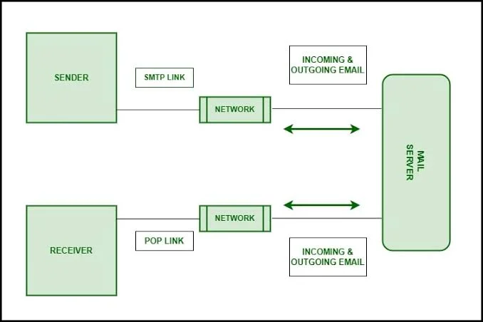
Process
- User email client/webmail में message type करता है।
- Sender mail server message receive करता है।
- Mail server DNS की help से receiver mail server का address find करता है।
- Message receiver mail server तक transfer होता है।
- Receiver inbox open करके message read करता है।
| Protocol | Use |
|---|---|
| SMTP | Email send करने के लिए। |
| POP3 | Email download करके local device में store करता है। |
| IMAP | Email server पर रखता है और multiple devices से sync करता है। |
Transmission Modes
Transmission Mode वह तरीका (Method) है जिसके द्वारा किसी
Communication Channel में Data एक Device से दूसरे Device तक भेजा
और प्राप्त किया जाता है।
यह निर्धारित करता है कि Data किस दिशा (Direction) में Flow करेगा तथा Communication एक तरफ होगा या
दोनों तरफ।
Transmission Mode का मुख्य उद्देश्य Devices के बीच सही, तेज़ और Reliable Data Communication
सुनिश्चित करना होता है।
Computer Networks, Mobile Communication, Internet तथा Telecommunication Systems में विभिन्न प्रकार
के Transmission Modes
का उपयोग किया जाता है। मुख्य रूप से Transmission Mode तीन प्रकार के होते हैं—
Simplex, Half Duplex तथा Full Duplex।
जब हम Television देखते हैं, तो केवल TV Station से हमारे Television तक Data आता है, लेकिन हम वापस कोई Data नहीं भेज सकते। इसी प्रकार Mobile Phone Call में दोनों व्यक्ति एक-दूसरे से एक साथ बात कर सकते हैं। इन सभी स्थितियों में अलग-अलग प्रकार के Transmission Modes का उपयोग होता है।
1. Simplex Transmission Mode
Simplex Transmission Mode वह Communication Mode है जिसमें Data केवल एक ही दिशा (One-Way Communication) में भेजा जाता है। इस Mode में एक Device केवल Data Send करती है तथा दूसरी Device केवल Data Receive करती है। Receiver किसी भी प्रकार का Response या Data वापस नहीं भेज सकता। इसलिए यह Mode केवल उन Applications में उपयोग किया जाता है जहाँ Feedback की आवश्यकता नहीं होती।
Keyboard → Computer, Television Broadcast तथा Radio Broadcasting Simplex Transmission Mode के सबसे सामान्य उदाहरण हैं।
2. Half Duplex Transmission Mode
Half Duplex Transmission Mode वह Communication Mode है जिसमें दोनों Devices Data Send और Receive कर सकती हैं, लेकिन एक समय पर केवल एक ही दिशा में Communication होता है। अर्थात जब एक Device Data भेज रही होती है, तब दूसरी Device केवल Data Receive कर सकती है। Data का आदान-प्रदान दोनों दिशाओं में होता है, लेकिन एक साथ नहीं होता।
Walkie-Talkie इसका सबसे अच्छा उदाहरण है। एक व्यक्ति पहले बोलता है, फिर दूसरा व्यक्ति उत्तर देता है। दोनों व्यक्ति एक साथ बात नहीं कर सकते।
3. Full Duplex Transmission Mode
Full Duplex Transmission Mode वह Communication Mode है जिसमें दोनों Devices एक ही समय (Simultaneously) पर Data Send और Receive कर सकती हैं। इस Mode में Communication दोनों दिशाओं में एक साथ होता है, जिससे Data Transfer की गति अधिक होती है और Communication अधिक Efficient बनता है। आधुनिक Computer Networks तथा Internet Communication में इसी Mode का सबसे अधिक उपयोग किया जाता है।
Mobile Phone Call, Video Calling तथा Modern Ethernet Network Full Duplex Transmission Mode के प्रमुख उदाहरण हैं, जहाँ दोनों Users एक ही समय पर बोल और सुन सकते हैं।
IP Address, MAC Address and DNS
IP Address
IP Address (Internet Protocol Address) एक unique numerical address होता है, जो
network या Internet से जुड़े प्रत्येक device की पहचान (identity) के लिए दिया जाता है। इसकी सहायता से
data packets सही source से सही destination तक पहुँचते हैं। प्रत्येक Computer, Mobile, Laptop या अन्य
network device का अपना अलग IP Address होता है। Example: 192.168.1.10
MAC Address
MAC Address (Media Access Control Address) एक unique physical address होता है, जो
प्रत्येक network device के Network Interface Card (NIC) को manufacturer द्वारा दिया जाता है। इसका
उपयोग Local Area Network (LAN) में किसी device की पहचान (identification) करने और data को सही device
तक पहुँचाने के लिए किया जाता है। Example: 00:1A:2B:3C:4D:5E
DNS
DNS (Domain Name System) एक network service है, जो domain name को उसके संबंधित IP Address में परिवर्तित करती है। क्योंकि Computers IP Address को समझते हैं, जबकि users domain names याद रखते हैं, इसलिए DNS दोनों के बीच एक translator का कार्य करती है।
Internet Security and Firewall
Internet Security का मतलब internet use करते समय data, devices, accounts और privacy को unauthorized access, malware, hacking, phishing और cyber attacks से protect करना है।
Common Threats
- Virus: Malicious program जो files damage कर सकता है।
- Phishing: Fake website/email से password चोरी करना।
- Malware: Harmful software जैसे spyware, ransomware आदि।
- Hacking: Unauthorized access to system or account.
Firewall
Firewall security system है जो incoming और outgoing network traffic को monitor और control करता है। यह trusted और untrusted network के बीच barrier की तरह काम करता है।
- Strong password use करें।
- Two-Factor Authentication enable करें।
- Unknown links पर click न करें।
- Antivirus और updates regularly करें।
Cloud Computing
Cloud Computing internet के through computing resources जैसे storage, servers, databases, software और networking services को on-demand access करने की technology है। इसमें user को अपने computer में बड़े hardware setup की जरूरत नहीं होती।
| Service | Full Form | Explanation | Example |
|---|---|---|---|
| IaaS | Infrastructure as a Service | Virtual machines, storage और networking infrastructure provide करता है। | AWS EC2, Azure VM |
| PaaS | Platform as a Service | Developers को applications develop और deploy करने के लिए platform देता है। | Google App Engine |
| SaaS | Software as a Service | Ready-made software internet के through use किया जाता है। | Gmail, Google Drive |
Advantages
- Cost saving क्योंकि physical servers की जरूरत कम होती है।
- Anywhere access.
- Scalability.
- Backup और disaster recovery आसान।